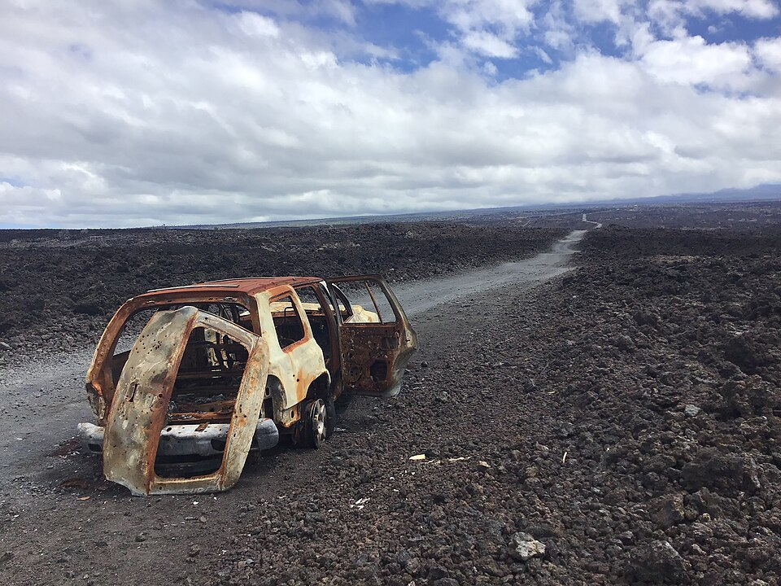

Hawaiian Ocean View Estates (HOVE)
Place: Hawaiian Ocean View Estates, Kaʻū, Hawaiʻi Island
Type: Residential subdivision / off-grid community
Namesake: A marketing name created by the Crawford Oil Company
Story it tells: How a speculative mainland developer transformed more than 11,000 acres of Mauna Loa lava fields into thousands of residential lots, selling the promise of an affordable Hawaiian paradise without providing the infrastructure usually expected of a town.

Hawaiian Ocean View Estates, commonly shortened to HOVE, spreads across the lower slopes of Mauna Loa in the remote Kaʻū District of Hawaiʻi Island. From Māmalahoa Highway, its enormous grid climbs thousands of feet through stark lava fields toward cooler and more heavily forested uplands. More than 10,000 mostly one-acre parcels were laid out across the subdivision, creating a community whose scale appears unbelievable when viewed on a map.
Before the subdivision, this landscape formed part of Kahuku, a massive ahupuaʻa along the slopes of Mauna Loa. Native Hawaiians cultivated hardy crops where pockets of soil had developed between older lava flows and traveled through the uplands to gather plants, timber, and other resources. During the nineteenth century, much of the region became part of Kahuku Ranch, a vast cattle operation that remained largely open and undeveloped.
In the late 1950s, the California-based Crawford Oil Company acquired more than 11,000 acres of rugged ranch land and forced a residential grid into the lava fields. Bulldozers cut straight roads across the uneven basalt, dividing the property into approximately 10,700 lots. The development emerged during the excitement surrounding Hawaiʻi statehood, when affordable ownership in the islands could be marketed as both an investment and an attainable piece of paradise.
Many lots were advertised to mainland buyers through brochures and mail-order sales. Many bought property without ever visiting Hawaiʻi or seeing the land in person. The street map strengthened the marketing illusion. Roads received names such as Orchid Parkway, Lotus Blossom Lane, Hibiscus Drive, Plumeria Lane, Ginger Blossom Lane, and Pineapple Parkway, creating a paper landscape filled with flowers, trees, and tropical abundance. In reality, many of those streets crossed dry expanses of jagged ʻaʻā lava with little soil, shade, or vegetation.
The developers provided roads and property lines, but little of the infrastructure normally associated with a residential community. There was no water distribution system, central sewer network, or reliable electrical service. The roads themselves remained private, eventually requiring residents to fund and manage their maintenance. Building a home typically required using heavy machinery to crush or remove lava, create a level foundation, and make space for wastewater systems, water tanks, gardens, and driveways.
Those limitations helped shape the community that exists today. Many households rely on rooftop rain catchment, large storage tanks, solar panels, batteries, propane, and septic or cesspool systems. During dry periods, which are often, residents purchase delivered water or transport it uphill themselves from public filling stations.
The same conditions that make daily life difficult have also kept land affordable. HOVE has attracted retirees, builders, artists, homesteaders, and people seeking privacy or independence. Residents have created homes, businesses, community organizations, and social networks in a place that was originally little more than an enormous subdivision map imposed upon an active volcanic landscape.
HOVE lies within Lava Zone 2 on Mauna Loa’s Southwest Rift Zone, where eruptions have repeatedly sent fast-moving flows toward the Kaʻū coast. Portions of the subdivision sit on lava from eruptions in 1887 and 1907, while other areas rest on older flows that have had more time to develop soil and vegetation. The destructive 1950 eruption occurred only a few years before the subdivision was created, sending lava from the Southwest Rift Zone to the ocean within hours and destroying structures along its path about 14 miles north of HOVE.
Across the subdivision, the distant Pacific remains visible from many lots, meaning the developers did not entirely invent the “Ocean View.” What they omitted was everything between the house and the horizon: miles of lava, limited infrastructure, long travel distances, volcanic risk, and the work required to make an undeveloped acre comfortable.
Hawaiian Ocean View Estates never became the polished suburban community promised by its name. A speculative paper subdivision evolved into a real community whose residents live with the possibility that Mauna Loa may someday reclaim the land again. HOVE is both a warning about poorly planned development and a testament to the resourcefulness of the people who live within it.